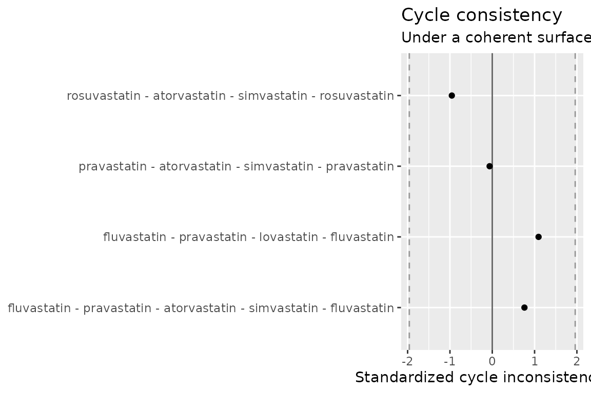

Diagnostics matter more than sophisticated estimation. Before trusting a fitted surface — let alone an anchored one — ask whether the comparative estimates are internally coherent, and whether the estimator would recover a truth you control.
library(directeffect)
de <- direct_effect_network(
example_comparisons,
anchors = example_anchors,
effect_measure = "HR"
)
fit <- fit_surface(de, engine = "netmeta")Edge residuals
For every comparison: the observed effect, the effect the fitted
surface predicts (theta_target - theta_comparator), and
their difference standardized by the residual’s actual standard
deviation — which is smaller than the comparison’s standard error,
because the prediction is partly built from the observation itself. The
leverage column says how much (at leverage 1, a
bridge comparison nothing else can corroborate, the
standardized residual is reported as NA rather than as a
falsely reassuring 0; this network has no bridges). Large standardized
residuals mark comparisons that conflict with the rest of the
network.
residuals <- edge_residuals(fit)
residuals[order(-abs(residuals$standardized_residual)), ][1:5, ]
#> target comparator observed predicted residual
#> 1 atorvastatin simvastatin -0.134 -0.04552752 -0.08847248
#> 2 atorvastatin simvastatin 0.105 -0.04552752 0.15052752
#> 5 rosuvastatin atorvastatin -0.165 -0.09962052 -0.06537948
#> 12 pravastatin fluvastatin -0.207 -0.09602850 -0.11097150
#> 7 rosuvastatin simvastatin -0.086 -0.14514804 0.05914804
#> standardized_residual leverage
#> 1 -1.9205450 0.4105256
#> 2 1.8497703 0.1824558
#> 5 -1.3185346 0.4982310
#> 12 -1.1094570 0.3052325
#> 7 0.9964642 0.4494746Cycle consistency
Around any closed loop of comparisons, the observed effects must sum
to zero if they are mutually consistent — walking A→B→C→A has to bring
you back to the same height. cycle_consistency() evaluates
a cycle basis (every cycle in the network is a combination of
basis cycles), so nothing is enumerated exhaustively; repeat comparisons
of a pair are pooled by precision first.
cycles <- cycle_consistency(fit)
cycles
#> cycle n_edges
#> 1 fluvastatin - pravastatin - lovastatin - fluvastatin 3
#> 2 fluvastatin - pravastatin - atorvastatin - simvastatin - fluvastatin 4
#> 3 pravastatin - atorvastatin - simvastatin - pravastatin 3
#> 4 rosuvastatin - atorvastatin - simvastatin - rosuvastatin 3
#> inconsistency std_error z
#> 1 0.192000000 0.17549929 1.09402153
#> 2 0.124938462 0.16429336 0.76045960
#> 3 -0.006061538 0.09691392 -0.06254559
#> 4 -0.106314480 0.11126525 -0.95550484
An inconsistency announces itself. Inject one — flip a single comparison by 0.5 on the log scale — and both diagnostics flag it:
broken <- example_comparisons
broken$estimate[3] <- broken$estimate[3] + 0.5
fit_broken <- fit_surface(
direct_effect_network(broken, effect_measure = "HR"),
engine = "netmeta"
)
max(abs(edge_residuals(fit_broken)$standardized_residual))
#> [1] 6.439361
max(abs(cycle_consistency(fit_broken)$z))
#> [1] 4.18992Recovery from known truth
The strongest oracle needs no real data at all: simulate a network
where the truth is known, fit it, and measure recovery.
simulate_direct_effect_network() retains the generating
truth, and validate_recovery() reports bias, RMSE, interval
coverage, and rank correlation from the fit contract alone — it works
identically for either engine.
simulation <- simulate_direct_effect_network(
n_drugs = 20, n_comparisons = 80, n_anchors = 3,
heterogeneity = 0, seed = 42, se_range = c(0.03, 0.08)
)
recovered <- fit_surface(simulation$network, engine = "netmeta")
validate_recovery(recovered, simulation)
#> $bias
#> [1] -0.01355662
#>
#> $rmse
#> [1] 0.0188893
#>
#> $coverage
#> [1] 0.9473684
#>
#> $rank_correlation
#> [1] 0.9982456
#>
#> $n_drugs
#> [1] 19
#>
#> $reference
#> [1] "drug_01"In the low-noise regime the bias is near zero and coverage is near nominal; the package’s test suite pins both down permanently. Together the three oracles — hand-computable examples, cross-engine agreement (see netmeta vs. Stan), and simulation truth — are what let the surface be trusted.